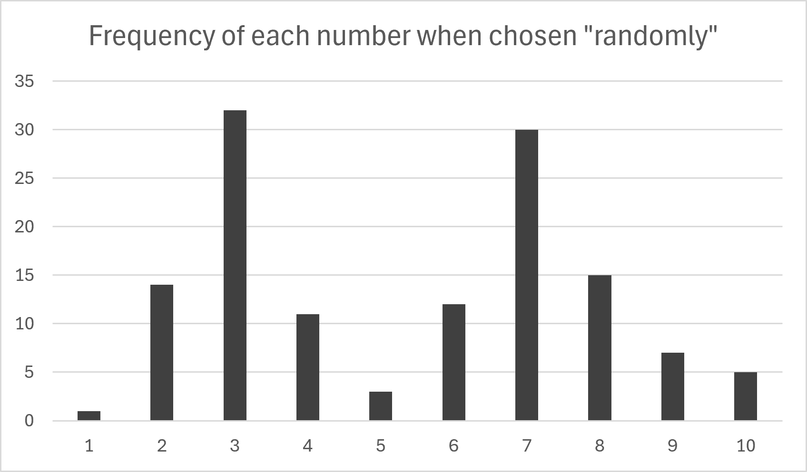
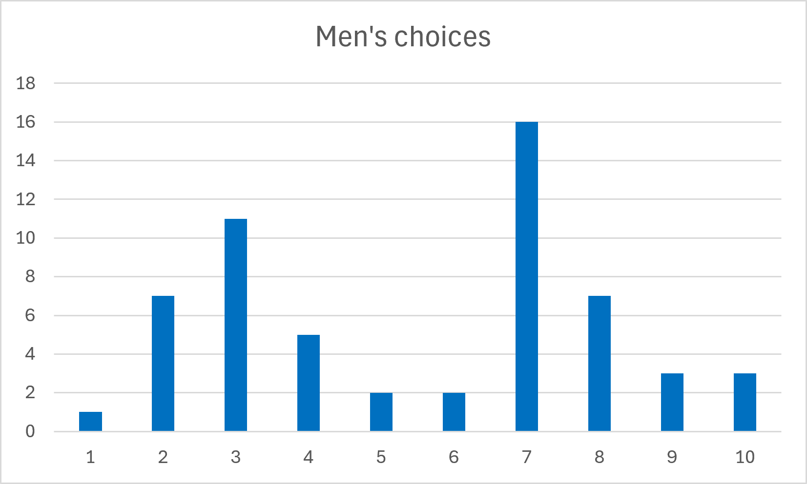
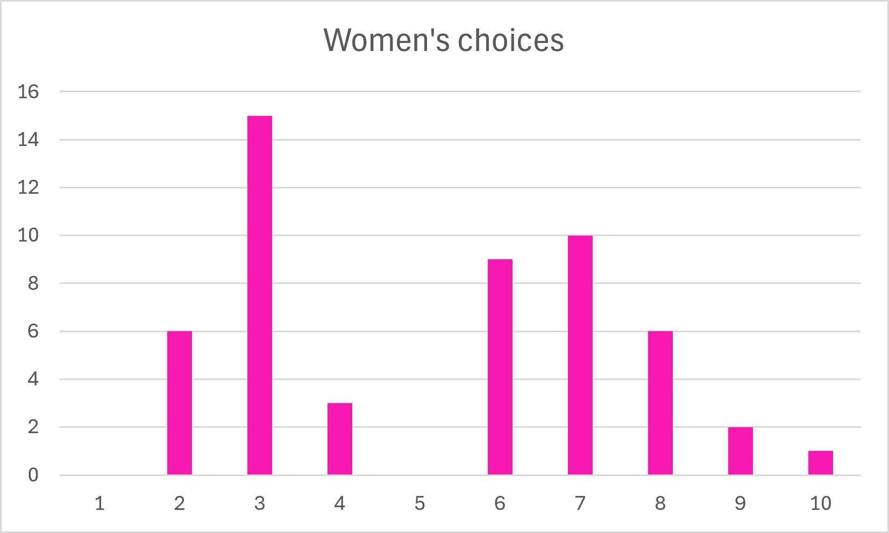

Numbers from 1-10

Are some numbers picked more frequently than others?
If you are asked to pick a random number from 1 to 10, you might think you are choosing randomly, but studies have shown that there may be some numbers that come to mind more readily. We were curious whether we could observe this among students at USU, so I asked 130 people on campus to choose a random number from 1-10. This chart demonstrates the results.
I expected to find that 7 was the most commonly answered number, but was surprised to discover that the most common was in fact 3. It was also interesting to see the shape of this chart, with similarly shaped peaks at 3 and 7. Why did so few people choose 1, 5, and 10? And what makes 2, 4, 6, and 8 slightly more common?
Surprisingly, only one person out of all 130 answered with the number 1.The p-value for that result is just 0.0002, meaning that there is essentially zero likelihood of that happening only by chance. I am curious what the cause of that is, along with all of the other patterns in this data.
I expected to find that 7 was the most commonly answered number, but was surprised to discover that the most common was in fact 3. It was also interesting to see the shape of this chart, with similarly shaped peaks at 3 and 7. Why did so few people choose 1, 5, and 10?
Surprisingly, only one person out of all 130 answered with the number 1.The p-value for that result is 0.0002, meaning that there is essentially zero likelihood of that happening just by chance.
I also recorded the gender of each respondent (male or female), in order to try and discover whether a person's gender had an influence on which number they were more likely to pick. Here are the results from 57 men and 52 women:


Interestingly, guys apparently choose 7 most often, and girls choose 3 most often. I wasn't expecting there to be any difference between the two genders, but as it turns out, there was actually a slight difference. I would probably need to collect a lot more data to really find out whether this difference is real, or if it was just a fluke.